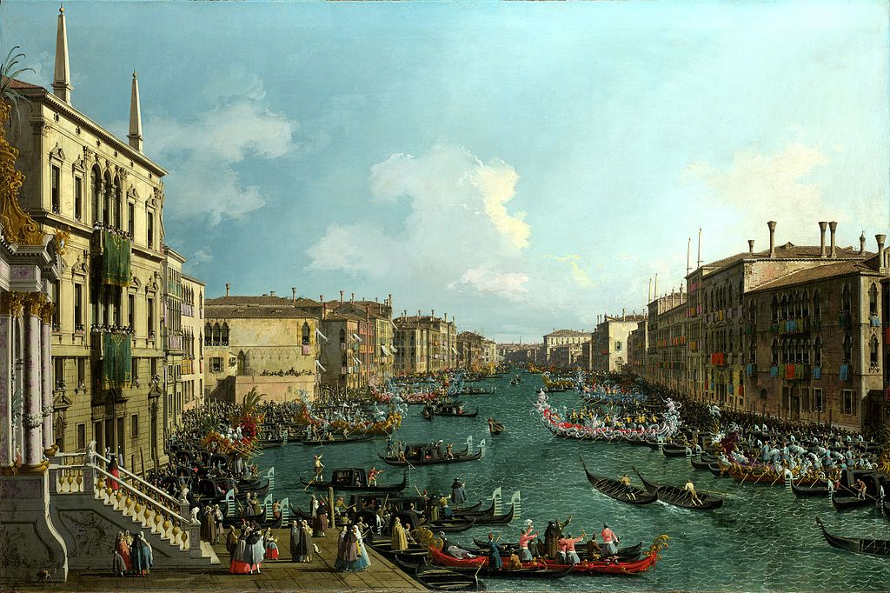

<head>
<meta charset="UTF-8" />
<meta name="keywords" content="drawing, painting" />
<meta name="description" content="drawings by Sunjy" />
<title>Sunjy</title>
<link rel="shortcut icon" type="image/x-icon" href="../../mImages/mCommon/favicon.ico" media="screen" />
<link rel="stylesheet" type="text/css" href="../../mCsses/mCommon/mCssA.css" />
<link rel="stylesheet" type="text/css" href="../../mCsses/mCommon/mCssB.css" />
<link rel="stylesheet" type="text/css" href="../../mCsses/mCommon/mCssC.css" />
<link rel="stylesheet" type="text/css" href="../../mCsses/mCommon/mCssD.css" />
<link rel="stylesheet" type="text/css" href="../../mCsses/mContent/mCssA.css" />
<link rel="stylesheet" type="text/css" href="../../mCsses/mContent/mCssB.css" />
<link rel="stylesheet" type="text/css" href="../../mCsses/mContent/mCssC.css" />
<link rel="stylesheet" type="text/css" href="../../mCsses/mContent/mCssD.css" />
</head>
<script type="text/javascript" src="../../mScripts/mContent/mContentAA.js" /></script>
<script type="text/javascript" src="../../mScripts/mContent/mContentAB.js" /></script>
<script type="text/javascript" src="../../mScripts/mContent/mContentAC.js" /></script>
<script type="text/javascript" src="../../mScripts/mContent/mContentAD.js" /></script>
<script type="text/javascript"></script> 
<script type="text/javascript">
document.write('<div class="mImgAbsolute"></div>');
/*
document.write('<p class="mFontSizeBColor" />From a white paper...</p>');
document.write('<table class="center"><tr><td>');
document.write('');
document.write('</td></tr></table>');
*/
</script>


<script type="text/javascript">
document.write('<p class="mFontSizeBColor" />A Regatta on the Grand Canal</p>');
document.write('<p class="mFontSizeSColor" />“A Regatta on the Grand Canal” by Canaletto depicts the annual carnival event in Venice, which started in the 14th century and continues to this day.<br><br>The city of Venice hosted regattas in honor of distinguished visitors as well as the annual carnival Regatta event. Some of the figures in the foreground wear the “bauta.”<br><br>A “bauta” is a costume consisting of a white mask and black cape, which was typically worn during the carnival.<br><br>This painting features the one-oared light gondola race and the temporary floating pavilion on the left, from which prizes in the form of colored flags were presented to the winners.<br><br>This picture is from a series of Grand Canal painted by Canaletto that depict Venice’s reputation as a city of festivities.  The ornate temporary structure bears the coat of arms of Carlo Ruzzini, who ruled as Doge of Venice from 1732 until 1735.<br><br>Spectators filled the boats along both sides of the Grand Canal. The balconies of the palaces were also crowded and decorated with colorful hangings. In addition to the color and spectacle, the eight-oared barges have been specially decorated for the occasion.<br><br>This Canaletto is a typical example of the vedute paintings popular with Grand Tour travelers of the 1700s as a visual record of their travels.<br><br>Canaletto was one of the more famous painters of city views or vedute, especially of Venice. From 1746 to 1756, he worked in England, where he created many paintings of the sights of London. He was highly successful in England.<br><br>He became famous thanks to the British merchant and connoisseur Joseph Smith, who sold his extensive collection of Canaletto’s paintings to King George III in 1762.<br><br>Canaletto’s paintings became highly prized because during the 18th-century as European monarchs vied for his grandest pictures.<br><br>Many of Canaletto’s paintings can be found in museums across the world, depict highly detailed, usually large-scale paintings of Venetian other famous cityscapes.<br></p>');
document.write('<table class="center" /><tr><td>');
document.write('<br>The city of Venice hosted regattas in honor of distinguished visitors as well as the annual carnival Regatta event. Some of the figures in the foreground wear the “bauta.”<br><br>A “bauta” is a costume consisting of a white mask and black cape, which was typically worn during the carnival.<br><br>This painting features the one-oared light gondola race and the temporary floating pavilion on the left, from which prizes in the form of colored flags were presented to the winners.<br><br>This picture is from a series of Grand Canal painted by Canaletto that depict Venice’s reputation as a city of festivities.  The ornate temporary structure bears the coat of arms of Carlo Ruzzini, who ruled as Doge of Venice from 1732 until 1735.<br><br>Spectators filled the boats along both sides of the Grand Canal. The balconies of the palaces were also crowded and decorated with colorful hangings. In addition to the color and spectacle, the eight-oared barges have been specially decorated for the occasion.<br><br>This Canaletto is a typical example of the vedute paintings popular with Grand Tour travelers of the 1700s as a visual record of their travels.<br><br>Canaletto was one of the more famous painters of city views or vedute, especially of Venice. From 1746 to 1756, he worked in England, where he created many paintings of the sights of London. He was highly successful in England.<br><br>He became famous thanks to the British merchant and connoisseur Joseph Smith, who sold his extensive collection of Canaletto’s paintings to King George III in 1762.<br><br>Canaletto’s paintings became highly prized because during the 18th-century as European monarchs vied for his grandest pictures.<br><br>Many of Canaletto’s paintings can be found in museums across the world, depict highly detailed, usually large-scale paintings of Venetian other famous cityscapes.<br>" />');
document.write('</td></tr></table>');
</script>


